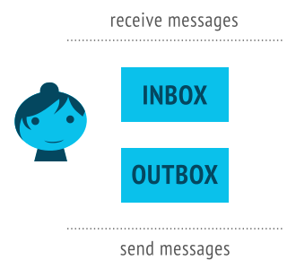
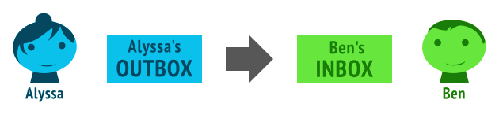

概要
ActivityPub プロトコルは、[ActivityStreams
目次 1. 概要1.1 Social Web Working Group2. 適合性2.1 仕様プロファイル3. オブジェクト3.1 オブジェクト識別子3.2 オブジェクトの取得3.3 source 属性4. アクター4.1 Actor オブジェクト5. コレクション5.1 Outbox5.2 Inbox5.3 Followers コレクション5.4 Following コレクション5.5 Liked コレクション5.6 Public アドレス指定5.7 Likes コレクション5.8 Shares コレクション6. クライアントからサーバへの通信6.1 クライアントアドレス指定6.2 Create アクティビティ6.2.1 Create アクティビティなしでのオブジェクト作成6.3 Update アクティビティ6.3.1 部分更新6.4 Delete アクティビティ6.5 Follow アクティビティ6.6 Add アクティビティ6.7 Remove アクティビティ6.8 Like アクティビティ6.9 Block アクティビティ6.10 Undo アクティビティ6.11 配送6.12 メディアのアップロード7. サーバからサーバへの通信7.1 配送7.1.1 サーバ-サーバ間のoutbox配送の要件7.1.2 inboxからの転送7.1.3 共有 Inbox への配送7.2 Create アクティビティ7.3 Update アクティビティ7.4 Delete アクティビティ7.5 Follow アクティビティ7.6 Accept アクティビティ7.7 Reject アクティビティ7.8 Add アクティビティ7.9 Remove アクティビティ7.10 Like アクティビティ7.11 Announce アクティビティ (共有)7.12 Undo アクティビティA. 国際化B. セキュリティ上の考慮事項B.1 認証と認可B.2 検証B.3 localhost URIへのアクセスB.4 URIスキーマB.5 再帰オブジェクトB.6 スパムB.7 連合サービス拒否B.8 クライアントからサーバへの通信量制限B.9 クライアントからサーバへのレスポンスのサービス拒否B.10 内容のサニタイズB.11 btoおよびbcc属性の非表示C. 謝辞D. 参考文献D.1 引用規格D.2 参考規格
1. 概要ActivityPub は二つの層を提供します:
サーバからサーバへの連合プロトコル (これにより非中央集権ウェブサイトが情報を共有できます)クライアントからサーバへのプロトコル (従って、現実世界のユーザー、ボット、その他の自動処理を含むユーザーは、 電話やデスクトップや web アプリケーションやなんでもから、 サーバでの自身のアカウントを使って ActivityPub で通信できます)
ActivityPub 実装は、これらの一つだけを実装しても良いし、両方とも実装しても 良いです。しかし、一旦一つを実装すれば、もう一つを実装するのにそれほど多くの ステップはなく、両方に多くの利益があります (web サイトを非中央集権型ソーシャル web にし、様々なソーシャル web サイトで 動作するクライアントとクライアントライブラリを使えるようにします)。
ActivityPub では、ユーザーはサーバ上のアカウントを通して アクター として表現されます。異なるサーバのユーザーアカウントはそれぞれ異なったアクターに対応します。全てのアクターは次のものを持ちます:
inbox:outbox:

これらはエンドポイント、つまり実際には ActivityPub actor の ActivityStreams 記述にある単なる URL です。(ActivityStreams については後に触れます。)
以下は、我が友 Alyssa P.Hacker の記録の例です:
例1
{"@context" : "https://www.w3.org/ns/activitystreams" ,
"type" : "Person" ,
"id" : "https://social.example/alyssa/" ,
"name" : "Alyssa P. Hacker" ,
"preferredUsername" : "alyssa" ,
"summary" : "Lisp enthusiast hailing from MIT" ,
"inbox" : "https://social.example/alyssa/inbox/" ,
"outbox" : "https://social.example/alyssa/outbox/" ,
"followers" : "https://social.example/alyssa/followers/" ,
"following" : "https://social.example/alyssa/following/" ,
"liked" : "https://social.example/alyssa/liked/" } ActivityPub は語彙として [ActivityStreams JSON-LD
さて。Alyssa は彼女の友人と話したいと思っていて、彼女の友人も彼女と 話したいと思っています!幸いにもこれらの "inbox" と "outbox" がその助けになります。これらはそれぞれ GET と POST で異なった振る舞いをします。これがどのように働くのかを見てみましょう:
では、ここでおさらいです:
あなたは誰かにメッセージを送るためにその人の inbox に POST できます (サーバからサーバ / 連合のみ…これが 連合です!)
あなたはあなたの最新のメッセージを読むためにあなたの inbox を GET できます (クライアントからサーバ; これはあなたのソーシャルネットワークストリームを 読むようなものです)
あなたは世界中にメッセージを送るためにあなたの outbox に POST できます (クライアントからサーバ)
あなたは誰か(あるいは少なくともあなたが読むことを許されている人)が どんなメッセージを書いたかを見るためにその人の outbox を GET できます。(クライアントからサーバとサーバからサーバ)
もちろん、もし最後のもの (誰かの outbox を GET する) が、人々が 送っているものを見る唯一の方法なら、これはとても効率的な 連合プロトコルとは言えません!実際には、連合は普通サーバが他のサーバのactorのinboxに送るときに起こります。
例を見てみましょう!Alyssa は友人である Ben Bitdiddle と話したいとします。彼女は彼に最近本を貸していて、それを返してくれるか確認したいです。以下は、彼女が書いた、ActivityStreams オブジェクトとしての メッセージです。
例2
{"@context" : "https://www.w3.org/ns/activitystreams" ,
"type" : "Note" ,
"to" : ["https://chatty.example/ben/" ],
"attributedTo" : "https://social.example/alyssa/" ,
"content" : "Say, did you finish reading that book I lent you?" } これは Ben に向けた note です。彼女はこれを彼女の outbox に POST します。
これは非アクティビティオブジェクトなので、サーバは これは新しく作成されたオブジェクトと認識し、これを Create アクティビティにラッピングします。(ActivityPub で送られる Activity は一般的に ある actor があるオブジェクトに対して行われるアクティビティ、という パターンに従います。この場合は、アクティビティは Person によって投稿される Note オブジェクトの Create です。)
例3
{"@context" : "https://www.w3.org/ns/activitystreams" ,
"type" : "Create" ,
"id" : "https://social.example/alyssa/posts/a29a6843-9feb-4c74-a7f7-081b9c9201d3" ,
"to" : ["https://chatty.example/ben/" ],
"actor" : "https://social.example/alyssa/" ,
"object" : {"type" : "Note" ,
"id" : "https://social.example/alyssa/posts/49e2d03d-b53a-4c4c-a95c-94a6abf45a19" ,
"attributedTo" : "https://social.example/alyssa/" ,
"to" : ["https://chatty.example/ben/" ],
"content" : "Say, did you finish reading that book I lent you?" }} Alyssa のサーバは Ben の ActivityStreams actor オブジェクトを探し、 彼の inbox エンドポイントを見つけ、彼の inbox に彼女のオブジェクトを POST します。
技術的にはこれは二つに分割されたステップです…一つ目は クライアントからサーバへの通信、もう一つはサーバからサーバへの通信(連合)です。しかし、この例では両方を使っているので、 outbox から inbox への一連の流れとしての投稿と抽象化して考えられます:

すばらしい!しばらく後に、Alyssa は彼女が受け取った新しいメッセージを チェックします。彼女のスマートフォンは彼女の inbox を GET でポーリングし、 友人が投稿した大量の猫動画や姉が投稿した甥の写真の中から、 彼女は次のメッセージを見つけます:
例4
{"@context": "https://www.w3.org/ns/activitystreams",
"type": "Create",
"id": "https://chatty.example/ben/p/51086",
"to": ["https://social.example/alyssa/"],
"actor": "https://chatty.example/ben/",
"object": {"type": "Note",
"id": "https://chatty.example/ben/p/51085",
"attributedTo": "https://chatty.example/ben/",
"to": ["https://social.example/alyssa/"],
"inReplyTo": "https://social.example/alyssa/posts/49e2d03d-b53a-4c4c-a95c-94a6abf45a19",
"content": "<p>Argh, yeah, sorry, I'll get it back to you tomorrow.</p>
<p>I was reviewing the section on register machines,
since it's been a while since I wrote one.</p>"}} Alyssa はほっとして、Ben の投稿に「いいね」します:
例5
{"@context" : "https://www.w3.org/ns/activitystreams" ,
"type" : "Like" ,
"id" : "https://social.example/alyssa/posts/5312e10e-5110-42e5-a09b-934882b3ecec" ,
"to" : ["https://chatty.example/ben/" ],
"actor" : "https://social.example/alyssa/" ,
"object" : "https://chatty.example/ben/p/51086" } 彼女はこのメッセージを彼女の outbox に POST します。(これはアクティビティなので、彼女のサーバは これを Create オブジェクトでラップする必要がないことを分かっています。)
幸せな気分になったので、彼女は彼女のフォロワーに公開メッセージを 投稿することにしました。ほどなくして以下のメッセージが彼女の followers コレクションの全ての メンバーに送信され、またこれは特殊な Public グループ宛になっているので、 誰でも一般に読むことができます。
例6
{"@context" : "https://www.w3.org/ns/activitystreams" ,
"type" : "Create" ,
"id" : "https://social.example/alyssa/posts/9282e9cc-14d0-42b3-a758-d6aeca6c876b" ,
"to" : ["https://social.example/alyssa/followers/" ,
"https://www.w3.org/ns/activitystreams#Public" ],
"actor" : "https://social.example/alyssa/" ,
"object" : {"type" : "Note" ,
"id" : "https://social.example/alyssa/posts/d18c55d4-8a63-4181-9745-4e6cf7938fa1" ,
"attributedTo" : "https://social.example/alyssa/" ,
"to" : ["https://social.example/alyssa/followers/" ,
"https://www.w3.org/ns/activitystreams#Public" ],
"content" : "Lending books to friends is nice. Getting them back is even nicer! :)" }}
1.1 Social Web Working Group
3. オブジェクトオブジェクトは [ActivityStreams Activity-Vocabulary Core Classes を参照のこと; ActivityPub はこの語彙のマッピングに非常に密接に従う。
ActivityPub は ActivityStreams によって提供されるものに加えていくつかの 用語を定義している。これらの用語は https://www.w3.org/ns/activitystreams で ActivityPub JSON-LD context として提供される。実装者はそのオブジェクト定義に ActivityPub context を含むべきである(SHOULD)。実装者は追加の context を必要に応じて含んでも良い(MAY)。
ActivityPub は ActivityStreams の URI / IRI 仕様 と同じものを共有する。
サーバはコンテンツスプーフィング攻撃を防ぐために受信したコンテンツを 検証するべきである(SHOULD)。(サーバは少なくとも、そのオブジェクトがその発信元から受信したことをチェックするのと 同じぐらい頑強な何かをするべきであるが、 可能であれば署名検証のような機構が望ましい。)特定の検証機構をこの文書で命令的に指定することはしないが、 いくつかの提案と良い習慣については セキュリティ上の考慮事項 を参照してほしい。
3.1 オブジェクト識別子[ActivityStreams
HTTPS URI のような、参照先をパブリックに取得可能な URI で、 その権限が発信元サーバに帰属するもの。(公開用のコンテンツは HTTPS URI を使うべきである(SHOULD)。)
明示的に JSON null オブジェクトとして指定された ID; この場合は無名オブジェクト(親コンテキストの一部) を意味する。
識別子は、アクティビティが意図的に一時的なものでない限り、 サーバからサーバへの通信で投稿するアクティビティでは 提供しなければならない(MUST)。しかし、クライアントからサーバへの通信では、id の指定なしに outbox に投稿されたオブジェクトを受信したサーバは、 そのアクターの名前空間の ID を割り当て、投稿されたオブジェクトに それを添付するべきである(SHOULD)。
全てのオブジェクトは以下の属性を持つ:
id
オブジェクトのユニークなグローバル識別子(オブジェクトが一時的なものの場合を 除く; この場合 id は省略しても良い(MAY))。
type
オブジェクトの型。
3.2 オブジェクトの取得アクティビティを取得するために、 オブジェクトの id 属性に対して HTTP GET メソッドを使うことがある。リクエストに対するレスポンスとして返すデータの種類を選択するために、 サーバは [RFC7231 application/ld+json; profile="https://www.w3.org/ns/activitystreams" への返答として ActivityStreams オブジェクト表現を表現しなければならず(MUST)、 application/activity+json への返答としても ActivityStreams 表現を表現するべきである(SHOULD)。クライアントはアクティビティを取得するために Accept ヘッダに application/ld+json; profile="https://www.w3.org/ns/activitystreams" メディアタイプを指定しなければならない(MUST)。
サーバは前述する要求に従わないリクエストに対して他の振る舞いを 実装しても良い(MAY)。(例えば、サーバは追加でレガシーなプロトコルを実装しても良いし、 あるリソースの HTML 表現と ActivityStreams 表現で同じ URI を使っても良い。)
サーバは B.1 認証と認可
3.3 source 属性[Activity-Vocabulary Object に source 属性を提供するように拡張する。source 属性は、content マークアップが 由来するなんらかのソースを出所の形式として伝えたり、 クライアントによる将来の編集に対応することを意図している。一般的に、クライアントは source から content への変換を行い、逆は行わない。
source の値は、 ソース情報を提供するために自身の content と mediaType フィールドを持つオブジェクトである。
例8
{
"@context" : ["https://www.w3.org/ns/activitystreams" ,
{"@language" : "en" }],
"type" : "Note" ,
"id" : "http://postparty.example/p/2415" ,
"content" : "<p>I <em>really</em> like strawberries!</p>" ,
"source" : {
"content" : "I *really* like strawberries!" ,
"mediaType" : "text/markdown" }
} 注 :クライアントがメディア型を意味のある形で扱えない場合は?
一般的に、元々作成したのと同じソース形式でユーザーに元の投稿を編集させるのが 最善である。しかし、全てのクライアントが全てのソース型に対するよいインターフェースを 安定して提供できるわけではなく、 クライアントは source から content への変換が行われることを 想定するので、 クライアントによっては、他のクライアントがどのように動作するかを知らない メディア型で動作するかもしれない。クライアントは編集するための content を都合良く提供して ソースを無視するかもしれないが、これはユーザーが将来の編集で元の source の望ましい形式を失うことを意味する。従って、そのようにするクライアントは最低限、元のソース形式が理解できないので 無視することを注意するような目立つ形での警告を提供するべきである。
例えば、Alyssa P.Hacker は、Org mode を 利用して彼女が書いた Emacs クライアントを使って ActivityPub 対応のブログに 投稿するのが好きです。後に彼女は電話のクライアントでの編集に切り替えました; これは text/x-org が何であるかや、これを HTML にレンダリングする 方法を知らないので、代わりに元の content を編集するための テキストボックスを提供します。この編集エリアの上には、助けになる警告が表示されます;「これは元々私たちが扱い方を知らないマークアップ言語で 書かれています。 これを編集すると、元のソースが失われます!」ちょっとした誤字修正に、いい感じの org-mode のマークアップを失う価値が ないと彼女は判断し、家に帰ってから更新することに決めました。
4. アクターActivityPub のアクターは一般的には ActivityStreams Actor Types の一つであるが、 それに制限されない。例えば、 Profile オブジェクトが アクターとして使われるかもしれないし、 ActivityStreams 拡張からの型が使われるかもしれない。アクターは ActivityPub の他の Object と同様に 取得 される。他の ActivityStreams オブジェクトと同様、アクターは URI である id を持つ。(例えばログインフォームのような)ユーザーインターフェースから直接入力された 場合、単純化した命名規則に対応しているのが望ましい。この目的のため、ID 正規化は以下のように行われるべきである(SHOULD):
入力された ID が有効な URI の場合、これが直接使われる。
example.org/alice/ のように、ユーザーが URI にスキームを追加するのを怠ったがそれ以外は有効であるように 見える場合、クライアントはデフォルトのスキーム (https が望ましい) を提供しようとしても良い(MAY)。
さもなければ、入力された値は不正として扱われるべきである。
一旦アクターの URI が識別されると、この参照先を取得するべきである。
注
ActivityPub は「ユーザー」と Actor との間で特定の関係を決定しない; 多くの設定が考えられる。ある Actor を複数の人間や組織が制御しているかもしれないし、 一人の人間や組織が複数の Actor を制御しているかもしれない。同様に、ある Actor はボットや自動化プロセスのようなソフトウェアの 一部を表現しているかもしれない。より詳細な「ユーザー」のモデリングとして、 例えば、同じ実体によって制御される複数の Actor を結びつけたり、 一つの Actor を複数のプロファイルや様相を通して表現できるようにすることは、 実装の裁量である。
4.1 Actor オブジェクトActor オブジェクトは、3.1 Object Identifiers
inbox
このアクターが受け取った全てのメッセージから成る [ActivityStreams OrderedCollection への参照; 5.2 Inbox
outbox
このアクターによって作成された全てのメッセージから成る [ActivityStreams OrderedCollection ; 5.1 Outbox
実装は、これに加えて、以下の属性を提供するべきである(SHOULD):
following
このアクターがフォローしているアクターを示す [ActivityStreams 5.4 Following Collection
followers
このアクターをフォローしているアクターを示す [ActivityStreams 5.3 Followers Collection
実装は以下の属性を提供しても良い(MAY):
liked
このアクターが好んでいるオブジェクトを示す [ActivityStreams 5.5 Liked Collection
Example 9
{
"@context" : ["https://www.w3.org/ns/activitystreams" ,
{"@language" : "ja" }],
"type" : "Person" ,
"id" : "https://kenzoishii.example.com/" ,
"following" : "https://kenzoishii.example.com/following.json" ,
"followers" : "https://kenzoishii.example.com/followers.json" ,
"liked" : "https://kenzoishii.example.com/liked.json" ,
"inbox" : "https://kenzoishii.example.com/inbox.json" ,
"outbox" : "https://kenzoishii.example.com/feed.json" ,
"preferredUsername" : "kenzoishii" ,
"name" : "石井健蔵" ,
"summary" : "この方はただの例です" ,
"icon" : [
"https://kenzoishii.example.com/image/165987aklre4"
]
} 実装は、これに加えて、以下の属性を提供しても良い(MAY):
streams
関心のある補助的な Collection のリスト。
preferredUsername
アクターを参照するために使われる短いユーザー名; ユニーク性は保証されない。
endpoints
このアクターまたはこのアクターを参照する誰かにとって有用かもしれない (典型的にはサーバ/ドメイン単位の) 追加のエンドポイントをマッピングした json オブジェクト。このマッピングはアクター文書の中で値としてネストしても良いし、 これらの属性を持つ JSON-LD 文書へのリンクでも良い。
endpoints マッピングは以下の属性を含んでいても良い(MAY):
proxyUrl
アクターのクライアントが、 アクセスするのに認証が必要なリモート ActivityStreams にアクセスするのに 使われる エンドポイント URI。このエンドポイントを使うには、クライアントは 要求する ActivityStreams オブジェクトの id の値を持つ x-www-form-urlencoded id 引数を 投稿する。
oauthAuthorizationEndpoint
OAuth 2.0 bearer トークン [RFC6749 RFC6750 クライアントからサーバへの通信 の 認証として使われる場合、 このエンドポイントは、ブラウザ認証ユーザーが新しい認証グラントを得るための URI を指定する。
oauthTokenEndpoint
OAuth 2.0 bearer トークン [RFC6749 RFC6750 クライアントからサーバへの通信 の 認証として使われる場合、 このエンドポイントは、クライアントがアクセストークンを得るための URI を指定する。
provideClientKey
Linked Data Signatures と HTTP Signatures が認証と認可として使われている場合、 このエンドポイントはブラウザ認証ユーザーが クライアントからサーバへの通信 の ためのクライアントの公開鍵を認証する URI を指定する。
signClientKey
Linked Data Signatures と HTTP Signatures が認証と認可として使われている場合、 このエンドポイントは 外部サーバと通信する際にアクターに代わって動作するタイミングのための、 actor のキーによって署名されるクライアントキーの URI を指定する。
sharedInbox
パブリックに宛先指定された アクティビティとフォロワーによって送られたアクティビティを 広く配布するために使われる オプションのエンドポイント。publicInbox エンドポイントは、 パブリックに読み込み可能な、 Public 特殊コレクションを示す オブジェクトを含む OrderedCollection オブジェクトであるべきである(SHOULD)。sharedInbox エンドポイントからの読み込みは、 Public エンドポイントにアドレス指定されていないオブジェクトを 表現してはならない(MUST NOT)。
注
ActivityPub のための上流語彙として、 任意の適用可能な [ActivityStreams
url
アクターの「プロフィール web ページ」へのリンク (これが id の値と同じではない場合)。
name
アクターの、望ましい「ニックネーム」や「表示名」。
summary
ユーザー自身の簡単な要約や経歴
icon
ユーザーのプロフィール画像を表現する、画像へのリンクまたは Image オブジェクト (これはサムネイルかもしれない)。
5. コレクション[ActivityStreams ActivityStreams paging を使うことに注意すること。
これらのコレクションの一部は特に OrderedCollection 型を指定しており、一方その他は Collection または OrderedCollection の両方を許していることに注意すること。 OrderedCollection は一貫して逆時系列順で表現されなければならない(MUST)。
注
逆時系列順を決定するのにどの属性が使われるかは、意図的に実装詳細として 残してある。例えば、多くの SQL スタイルのデータベースは識別子としてインクリメントする 整数を使う; これはほとんどの場合挿入順として合理的に使われる。その他のデータベースでは、挿入時刻タイムスタンプが好まれるかもしれない。何が使われるかは重要ではないが、新しいアイテムが最初になるような形で 要素の順序が保持されていなければならない。「最終更新」タイムスタンプのような定期的に変更される属性は 使われるべきではない。
5.1 Outboxoutbox は アクター のプロファイルの outbox プロパティを使って発見される。outbox は OrderedCollection でなければならない(MUST)。
outboxストリームは、要求者がアクティビティを取得する能力があるという前提で、 ユーザーが発行したアクティビティを含む (つまり、outbox の内容はそれを読む人の権限によってフィルタされる)。ユーザーが Authorization なしでリクエストを投稿した場合、 サーバは全ての Public 投稿を 応答するべきである。これは場合によってはそのユーザーによって発行された、全ての関連する オブジェクトとなるかもしれないが、 利用可能なアイテムの数はサーバの実装とデプロイの自由裁量に任されている。
outbox は HTTP POST リクエストを受け付ける; その振る舞いは クライアントからサーバへの通信 に 記述されている。
5.2 Inboxinbox は アクター のプロファイルの inbox プロパティを使って発見される。inbox は OrderedCollection でなければならない(MUST)。
inbox ストリームはアクターが受信した全てのアクティビティを含む。サーバは要求者の権限に応じてコンテンツをフィルタリングするべきである(SHOULD)。一般的に、inbox の所有者は その inbox のコンテンツ全てにアクセスできる。inbox にアクセスできる場合でも、アクセス制御に依存して、その他のコンテンツの 一部はパブリックで、一方その他のコンテンツは非所有者のユーザーは認証を 要求されるかもしれない。
サーバは inbox に返されたアクティビティの重複解消を 実行しなければならない(MUST)。重複は、あるアクティビティがあるアクターのフォロワーと、受信アクターを フォローしている特定のアクターの両方にアドレス指定され、 サーバが受信リストの重複解消に失敗したときに起こる。このような重複解消は、アクティビティの id を比較して、 既に読んだアクティビティを落とす形で行われなければならない(MUST)。
連合サーバ上のアクターの inbox は HTTP POST リクエストを受け付ける; その振る舞いは 配送 に記述されている。非連合サーバは POST リクエストを受け取った場合は 405 Method Not Allowed を 返すべきである(SHOULD)。
5.3 Followers コレクション各 アクター は followers コレクションを 持つべきである(SHOULD)。これはこのアクターに Follow アクティビティを送信したときに 副作用 として追加された送信者の一覧である。これは誰かがあるアクターをフォローしている全てのユーザーの一覧を 見つける場所である。followers コレクションは OrderedCollection または Collection でなければならず(MUST)、 認証されたユーザーの権限や、認証がない場合は適切な形でフィルタリングしても 良い(MAY)。
注 :通知の対象のデフォルト
follow アクティビティは一般的には、あるアクターが作成したオブジェクトを 見るための要求である。これにより、Followers コレクションは通知の 配送 の 適切なデフォルトの対象になる。
5.4 Following コレクション各アクターは following コレクションを持つべきである(SHOULD)。これは 副作用 として追加された、 このアクターがフォローした相手の一覧である。following コレクションは OrderedCollection または Collection でなければならず(MUST)、 認証されたユーザーの権限や、認証がない場合は適切な形でフィルタリングしても 良い(MAY)。
5.5 Liked コレクション各アクターは liked コレクションを持っても良い(MAY)。これは 副作用 として追加された、 このアクターの全ての Like のオブジェクトの一覧である。liked コレクションは OrderedCollection または Collection でなければならず(MUST)、 認証されたユーザーの権限や、認証がない場合は適切な形でフィルタリングしても 良い(MAY)。
5.6 Public アドレス指定[ActivityStreams https://www.w3.org/ns/activitystreams#Public である。例:
例10
{
"@context" : "https://www.w3.org/ns/activitystreams" ,
"id" : "https://www.w3.org/ns/activitystreams#Public" ,
"type" : "Collection"
} この特殊な URI を宛先に指定された Activity は全てのユーザーから 認証なしにアクセスできる。実装者は「パブリック」特殊コレクションへ配送してはならない(MUST NOT); これは実際のアクティビティを受信する能力を持たない。しかし、アクターはパブリックな投稿の効率的な共有配送のために利用可能である sharedInbox7.1.3 Shared Inbox Delivery
注
ActivityStreams JSON-LD コンテキストを使って ActivityStreams オブジェクトを短縮化すると、 https://www.w3.org/ns/activitystreams#Public は、 それぞれバプリックコレクションの正当な表現である、 単に Public および as:Public と 表現できることに注意すること。ActivityStreams に関して、 受信したアクティビティを JSON-LD ツールを使ってローカルなコンテキストに 変換するのではなく、単に JSON として扱う実装はこれに注意するべきで、 3 種類全ての表現を受け付けるように準備するべきである。
5.7 Likes コレクション各オブジェクトは likes コレクションを持ってもよい(MAY)。これは 副作用 として追加された、 このオブジェクトを object 属性として持つ全ての Like アクティビティの一覧である。likes コレクションは OrderedCollection または Collection でなければならず(MUST)、 認証されたユーザーの権限や、認証がない場合は適切な形でフィルタリングしても 良い(MAY)。
注
likesliked
liked: 明確にアクターの属性。これは このアクターによって 行われた Like アクティビティのコレクションで、 outbox への配送の副作用 として コレクションに追加される。likes: あらゆるオブジェクトの属性となり得る。これはこのオブジェクトを参照している Like アクティビティの コレクションで、 inbox への配達の副作用 として コレクションに追加される。
5.8 Shares コレクション各オブジェクトは shares コレクションを持っても良い(MAY)。これは、このオブジェクトを object 属性に含む全ての Announce アクティビティの一覧で、 副作用 として追加されたものである。shares コレクションは OrderedCollection または Collection でなければならず(MUST)、 認証ユーザーの権限によってや、認証が与えられなかったときに適切になるように、 フィルタリングしても良い(MAY)。
6. クライアントからサーバへの通信[ActivityStreams
クライアントからサーバへの通信は、クライアントがアクターの outbox に Activitity 投稿することで行われる。これを行うために、クライアントはアクターの profile からその outbox の URL を 発見しなければならず(MUST)、 それから、Content-Type に application/ld+json; profile="https://www.w3.org/ns/activitystreams" を指定した POST リクエストをこの URL に行わなければならない(MUST)。サーバはクライアントからサーバへの通信において、 Content-Type や Accept のヘッダで application/activity+json を application/ld+json; profile="https://www.w3.org/ns/activitystreams" と等価と見なしてもよい(MAY)。このリクエストは、outbox を所有するユーザーの認証情報で 認証されなければならない(MUST)。POST リクエストのボディは、単一の Activity (組み込みオブジェクトを含んでいても良い(MAY))、あるいは サーバによって Create アクティビティにラッピングされる 単一の非 Activity オブジェクトのどちらかを含んでいなければならない(MUST)。
例11 : outboxへのActivityの投稿
POST /outbox/ HTTP/1.1
Host : dustycloud.org
Authorization : Bearer XXXXXXXXXXX
Content-Type : application/ld+json; profile="https://www.w3.org/ns/activitystreams"
{
"@context" : ["https://www.w3.org/ns/activitystreams" ,
{"@language" : "en" }],
"type" : "Like" ,
"actor" : "https://dustycloud.org/chris/" ,
"name" : "Chris liked 'Minimal ActivityPub update client'" ,
"object" : "https://rhiaro.co.uk/2016/05/minimal-activitypub" ,
"to" : ["https://rhiaro.co.uk/#amy" ,
"https://dustycloud.org/followers" ,
"https://rhiaro.co.uk/followers/" ],
"cc" : "https://e14n.com/evan"
} id 属性付きの Activity が投稿されたとき、 サーバはこれを無視してこの Activity のための新しい id を 生成しなければならない(MUST)。サーバは 201 Created HTTP コードを返さなければならず(MUST)、 Activity が一時的なものでない限り、 Location ヘッダに新しい id を 含めなければならない(MUST)。
Example 12 : 投稿されたActivityへのOutboxのレスポンス response to submitted Activity
HTTP/1.1 201 Created
Location : https://dustycloud.org/likes/345 ActivityStreams オブジェクトに bto や bcc 属性がある 場合、サーバは配送の前にこれらを削除しなければならない(MUST)が、 もともと bto / bcc 属性に保管されていた宛先を delivery での宛先を決定するのに使用しなければならない(MUST)。
それからサーバは新しい Activity を outbox コレクションに 追加しなければならない(MUST)。Activity の型に依存して、サーバはさらなる副作用を実行することが要求される。(しかし、Activity が outbox に現れる時刻には保証されない。Activity は遅延して現れたり、任意の時点で消滅したりするかもしれない。)これらは後述する個々の Activity に記述されている。
クライアントからサーバで実装されていないサーバにオブジェクトを投稿しようとした 場合、405 Method Not Allowed レスポンスを返すべきである(SHOULD)。
HTTP キャッシュ機構 [RFC7234
6.1 クライアントアドレス指定クライアント は、 新しい Activity を適切にアドレス指定することに責任を持つ。これはある程度特定のクライアントの実装に依存するが、 サーバは新しい Activity を to, bto, cc, bcc, audience フィールドのアドレス指定先にのみ 転送する、ということをクライアントは認識しておかなければならない。
Followers コレクション と Public コレクション は、 新しい Activity のデフォルトの宛先として良い選択肢である。
クライアントは、 object, target, inReplyTo, tag フィールドで 新しい Activity に添付されたオブジェクトを見るべきであり(SHOULD)、 その actor や attributedTo 属性を取得して、 また、そのアドレス指定属性を取得して、 作成された新しい Activity の to または cc フィールドに追加してもよい(MAY)。クライアントは添付されたオブジェクトを再帰しても良い(MAY)が、 そうする場合はこの再帰に制限を設定するべきである(SHOULD)。(これは、クライアントがアドレス指定されたアクターのコレクションを個々の宛先として 「展開」することを提案しているのではないことに注意すること。)
クライアントは UI でユーザーに宛先を変更する機会を与えても良い(MAY)。
例えば、Chris が Amy による次の記事に「いいね」をするとき:
例13 : 記事
{
"@context" : ["https://www.w3.org/ns/activitystreams" ,
{"@language" : "en-GB" }],
"id" : "https://rhiaro.co.uk/2016/05/minimal-activitypub" ,
"type" : "Article" ,
"name" : "Minimal ActivityPub update client" ,
"content" : "Today I finished morph, a client for posting ActivityStreams2..." ,
"attributedTo" : "https://rhiaro.co.uk/#amy" ,
"to" : "https://rhiaro.co.uk/followers/" ,
"cc" : "https://e14n.com/evan"
} クライアントによって生成される「いいね」は:
例14 : 記事への「いいね」
{
"@context" : ["https://www.w3.org/ns/activitystreams" ,
{"@language" : "en" }],
"type" : "Like" ,
"actor" : "https://dustycloud.org/chris/" ,
"summary" : "Chris liked 'Minimal ActivityPub update client'" ,
"object" : "https://rhiaro.co.uk/2016/05/minimal-activitypub" ,
"to" : ["https://rhiaro.co.uk/#amy" ,
"https://dustycloud.org/followers" ,
"https://rhiaro.co.uk/followers/" ],
"cc" : "https://e14n.com/evan"
} 受信した outbox は、(いいねした) Chris のフォロワーだけでなく、 元の記事を受け取っている Amy、Amy のフォロワー、Evan にも 配送 できる。
以下のアクティビティを outbox に投稿するクライアントは、 アクティビティに object 属性も提供しなければならない(MUST): Create, Update, Delete, Follow, Add, Remove, Like, Block, Undo。さらに、以下のアクティビティを outbox へ投稿するクライアントは、 target 属性も提供しなければならない(MUST): Add, Remove。
6.2 Create アクティビティCreate アクティビティは新しいオブジェクトを投稿するときに使われる。これは、Activity の中に(object 属性として)埋め込まれている オブジェクトが作成されるという副作用がある。
Create アクティビティが投稿されたとき、アクティビティの actor は object の attributedTo フィールドにコピーされるべきである(SHOULD)。
Create アクティビティとその object のアドレス指定の 不一致はおそらく混乱を引き起こす。従って、サーバは初期の配送時に Create アクティビティの宛先を その object にコピーするべきであり(SHOULD)、 同様に object からラップしている Create アクティビティに コピーするべきである(SHOULD)。Create のアドレス指定を変更することなく (例えば Update アクティビティで) object のアドレス指定を変更することは 受け入れられることに注意すること。
6.2.1 Create アクティビティなしでのオブジェクト作成クライアントからサーバへの投稿で、 周りのアクティビティなしでオブジェクトを作成することも可能である。サーバは outbox への POST リクエストで、 Activity のサブタイプでない 正当な [ActivityStreams Create Activity の object として添付しなければならない(MUST)。非一時的オブジェクトに関しては、 サーバはラッピングした Create とラップされた Object に対して、id を 添付しなければならない(MUST)。
注
サーバから返された Location の値は、 新しい(オブジェクトではなく) Create アクティビティの URL であるべきである。
オブジェクトで指定されている to, bto, cc, bcc, audience 属性は、 サーバによって新しい Create アクティビティにコピーされなければならない(MUST)。
Example 15 : Object with audience targeting
{
"@context" : "https://www.w3.org/ns/activitystreams" ,
"type" : "Note" ,
"content" : "This is a note" ,
"published" : "2015-02-10T15:04:55Z" ,
"to" : ["https://example.org/~john/" ],
"cc" : ["https://example.com/~erik/followers" ,
"https://www.w3.org/ns/activitystreams#Public" ]
} 例16 : サーバによって生成されたCreateアクティビティのラッパ
{
"@context" : "https://www.w3.org/ns/activitystreams" ,
"type" : "Create" ,
"id" : "https://example.net/~mallory/87374" ,
"actor" : "https://example.net/~mallory" ,
"object" : {
"id" : "https://example.com/~mallory/note/72" ,
"type" : "Note" ,
"attributedTo" : "https://example.net/~mallory" ,
"content" : "This is a note" ,
"published" : "2015-02-10T15:04:55Z" ,
"to" : ["https://example.org/~john/" ],
"cc" : ["https://example.com/~erik/followers" ,
"https://www.w3.org/ns/activitystreams#Public" ]
},
"published" : "2015-02-10T15:04:55Z" ,
"to" : ["https://example.org/~john/" ],
"cc" : ["https://example.com/~erik/followers" ,
"https://www.w3.org/ns/activitystreams#Public" ]
}
6.3 Update アクティビティUpdate アクティビティは、既に存在するオブジェクトを更新するときに 使われる。これの副作用として、アクターがこのオブジェクトを更新する権限を持っている場合、 object は Update アクティビティで定義されている新しい構造を 反映した形で修正されなければならない(MUST)。
6.3.1 部分更新クライアントからサーバへの通信では、更新は部分的である; 文書全体を一度に更新するのではなく、指定された任意のキー/値の組が 既存の値を新しい値に置き換えるために使われる。これは更新されるオブジェクトの最上位のフィールドにのみ適用される。特別な例外は、値が json の null 型の場合である; これは、このフィールドはサーバのオブジェクト表現から 削除されるべきと言うことを意味する。
この振る舞いは、クライアントがサーバに投稿したときのクライアントからサーバへの 通信のみであることに注意すること。サーバからサーバへの相互作用と、サーバからクライアントへの更新は、 部分的更新が適用された後の、オブジェクトの完全に新しい表現を含むべきであることに注意すること。より詳しくは サーバ間相互作用での Update アクティビティ の説明を参照のこと。
6.4 Delete アクティビティDelete アクティビティは、既に存在するオブジェクトを 削除するために使われる。この副作用として、サーバは object を、 削除されたオブジェクトを参照するアクティビティで表示される Tombstone のオブジェクトに置き換えても良い(MAY)。削除されたオブジェクトが要求された場合、サーバは、 レスポンスボディとして Tombstone オブジェクトが表現されている場合は HTTP 410 Gone ステータスを、 さもなければ HTTP 404 Not Found ステータスを返すべきである (SHOULD)。
削除されたオブジェクト:
例17
{
"@context" : "https://www.w3.org/ns/activitystreams" ,
"id" : "https://example.com/~alice/note/72" ,
"type" : "Tombstone" ,
"published" : "2015-02-10T15:04:55Z" ,
"updated" : "2015-02-10T15:04:55Z" ,
"deleted" : "2015-02-10T15:04:55Z"
}
6.5 Follow アクティビティFollow アクティビティは、他のアクターのアクティビティを 購読するために使われる。
これを outbox に受信した場合の副作用として、 サーバは、この Follow アクティビティをオブジェクトとした Accept アクティビティを引き続いて受信した場合にのみ、 actor の following コレクションobject を追加するべきである(SHOULD)。
6.6 Add アクティビティAdd アクティビティを outbox に受け取ったとき、 以下の場合を除いて、サーバは object を target プロパティで指定されたコレクションに追加するべきである(SHOULD):
target が受信サーバによって所有されておらず、従ってこれを更新する権限がない。受信サーバの裁量により、なんらかの理由によって object を target コレクションに追加することを 認められていない。
6.7 Remove アクティビティoutbox に Remove アクティビティを受信すると、 サーバは次の場合を除いて、 target 属性で指定されたコレクションから object を削除するべきである(SHOULD)。
target が受信サーバによって所有されておらず、従ってこれを更新する権限がない。object が、受信サーバの裁量により、何らかの他の理由で target から削除することを認められていない。
6.8 Like アクティビティLike アクティビティは アクター が object を好んでいることを示す。
これを outbox に受信したときの副作用として、 サーバは actor の liked コレクションobject を追加するべきである(SHOULD)。
6.9 Block アクティビティBlock アクティビティは、投稿したアクターは (object属性で定義された)アクターが Block アクティビティを投稿したアクターによって投稿された オブジェクトと相互作用出来ることを望まないことを示すために使われる。サーバはブロックしたユーザーと、このアクターによって投稿された任意の オブジェクトとの相互作用を防止するべきである (SHOULD)。
サーバは Block アクティビティをその object に 配送するべきではない(SHOULD NOT)。
6.10 Undo アクティビティUndo アクティビティは以前のアクティビティを取り消すときに使われる。Activity Vocabulary 文書の Inverse Activities and "Undo" を参照のこと。例えば、Undo は以前の Like, Follow, Block のいずれかの 取り消しのために使われる。Undo アクティビティと取り消されるアクティビティはどちらも同じ actor を 持っていなければならない(MUST)。副作用として、できるだけ広範囲に取り消しを行うべきである。例えば、もし Like を取り消すと、その前にインクリメントされた カウンタは適切にデクリメントされるべきである。
既存の明示的な「逆アクティビティ」を代わりに使うべき例外がある。Create ベースのアクティビティは Delete を、 Add アクティビティは Remove を使うべきである。
6.11 配送連合サーバは outbox に投稿された全ての Activity を outbox配送 に従って配送を実行しなければならない(MUST)。
7. サーバからサーバへの通信サーバは、アクティビティをアクターの inbox エンドポイントに ポストすることで、他のサーバと通信し、情報をソーシャルグラフ上に伝搬させる。ネットワーク上を送られる Activity は、一時的であることを意図している場合を 除き、id を持つべきである(SHOULD) (一時的な場合は id を省略しても良い(MAY))。
(inbox などへの) POST リクエストは Content-Type に application/ld+json; profile="https://www.w3.org/ns/activitystreams" を設定しなければならず(MUST)、GET リクエスト (3.2 Retrieving objects application/ld+json; profile="https://www.w3.org/ns/activitystreams" を 設定しなければならない(MUST)。サーバは、サーバからサーバへの通信において、Content-Type や Accept ヘッダの application/activity+json を application/ld+json; profile="https://www.w3.org/ns/activitystreams" と 等価なものとして扱うべきである(SHOULD)。
ソーシャルグラフ上に更新を伝搬させるために、Activity は適切な宛先に 送信される。まず、これらの宛先は、アクターに到達するまでオブジェクト間の適切なリンクを 辿ることで決定され、 それからこの Activity はアクターの inbox に挿入される (配送 )。これにより、宛先サーバは:
そのアクティビティに関連する副作用を実施する (例えば、あるアクターがあるオブジェクトに「いいね」をした通知は、 そのオブジェクトの「いいね」カウントを更新するのに使われる);
更新が確実にソーシャルグラフ全体に伝搬するように、 Activity を元のオブジェクトの宛先に配送する (inbox delivery を参照のこと)。
配送は通常、例えば以下のもので引き起こされる:
他のサーバ上のアクターの inbox や publicInbox 属性への配送を実行するサーバは、 次のアクティビティ内に object 属性を提供しなければならない(MUST): Create, Update, Delete, Follow, Add, Remove, Like, Block, Undo。さらに、以下のアクティビティのサーバ間配送を実行するサーバは、 target 属性も提供しなければならない(MUST): Add, Remove
他のサーバからの返答を受信するときと他のサーバへ返答を送信するときの 両方において、適切な場合には HTTP キャッシュ機構 [RFC7234
7.1 配送以下は他の連合サーバと通信する連合サーバのみに要求される。
アクティビティは、まずターゲット(これはアクター )の inboxを探して、それからそのinboxにアクティビティを投稿することで配送される。配送するターゲットは、 ActivityStreams audience targeting をチェックすることで決定される; つまり、アクティビティの to, bto, cc, bcc, audience フィールドである。
inbox はまず ターゲットアクターのJSON-LD表現を取得 し、 それから inbox 属性を探すことで決定される。宛先が Collection または OrderedCollection の場合、 サーバはコレクションを(ユーザーの認証情報と共に)展開し、コレクションの それぞれの要素の inbox を発見しなければならない(MUST)。サーバはコレクションの展開を実行する層の数を制限しなければならない(MUST); これは 1 でもよい(MAY)。
サーバは最終的な宛先リストの重複を解消しなければならい(MUST)。サーバはまた、通知される Activity の アクター と同じアクターをリストから除去しなければならない(MUST)。つまり、ユーザーは自分のアクティビティを自分に配送することはできない。
注 : 暗黙でプライベートなアクティビティ
宛先がない場合にどうするかは未定義であるが、もし宛先が指定されなかった場合、 オブジェクトを完全にプライベートな状態において、アクセスコントロールは そのオブジェクトへのアクセスを制限することが推奨される。もしオブジェクトが単に「パブリック」コレクションに送信された場合、 オブジェクトは誰にも配送されないが、アクターの outbox で公に閲覧可能になる。
(投稿ユーザーの認証付きの) HTTP POST リクエストは、 アクティビティをリクエストのボディとして inbox に行われる。このアクティビティは受信者によって inbox OrderedCollection の item として追加される。非連合サーバの inbox へ配送しようとする試みは 405 Method Not Allowed レスポンスを返すべきである(SHOULD)。
連合サーバがサードパーティーサーバへ配送を実行する場合には、 配送は非同期に実行されるべきであり(SHOULD)、 これがネットワークエラーによって失敗した場合は受信者への配送を 再試行するべきである(SHOULD)。
注記: 同じ origin のアクター間で 配送される Activity は任意の内部機構を使ってもよく、HTTP を使うことは要求されない。
注 : Linked Data Notificationsとの関係
この仕様を理解するのに読むのは必須ではないが、 ActivityPub のターゲットと配送の機構は Linked Data Notifications 仕様と 重複していて、二つの仕様は相互に結合できることは記しておく価値がある。特に、inbox 属性は ActivityPub と Linked Data Notifications で 同じで、この文書に記述されているターゲットと配送の機構は Linked Data Notifications に支えられている。JSON-LD コンパクト化 ActivityStreams 文書に加えて、 Linked Data Notifications は、ActivityPub 実装で必要でない様々な RDF 直列化も対応している。しかし、より広く Linked Data Notifications 実装と互換性を持たせたい ActivityPub 実装は、その他の RDF 表現に対応した方がよい。
7.1.2 inboxからの転送注 : ゴーストリプライ問題を避けるための転送
以下の節は、連合ネットワークで時々問題を引き起こす、 「ゴーストリプライ」問題を緩和するためのものである。この問題を例で示す。
Alyssa は、会議での論文の発表が上手くいったことを投稿し、 友人である Ben を含む彼女のフォロワーコレクションに送りました。Ben は祝福する内容を Alyssa のメッセージに返信し、 宛先に彼女のフォロワーコレクションを含めました。しかし、Ben は Alyssa のフォロワーコレクションの内容にアクセス出来ないので、 Ben のサーバは彼のメッセージを彼らの inbox に転送できません。次の機構がない場合、その後 Alyssa が Ben に返信すると、 彼女のフォロワーは、Ben の返信を見ることなく Alyssa が Ben に返信するのを 見ることになります。これはとても混乱します!
Activity を inbox に受信したとき、 サーバはこれらを送信元が配信できない宛先に転送する必要がある。これを行うために、サーバは次の全てが真の場合にのみ、 to, cc, audience の値にターゲットして 配送 しなければならない(MUST):
サーバがこの Activity を見るのは初めてである。
to, cc, audience の値に サーバが所有しているコレクションが含まれている。inReplyTo, object, target, tag の値が サーバが所有しているオブジェクトである。サーバは、自身が所有しているリンクされたオブジェクトを探すためにこれらの値を 再帰するべきであり(SHOULD)、 再帰の上限を設定するべきである(SHOULD) (つまり、スレッドが深くなった時点で、受信フォロワーは、 受信者に直接関係ない更新を受け取らなくても気にしないかもしれない)。サーバは転送された元のオブジェクトの to, cc, audience の値のみを ターゲットし、(これらのアドレスが意図的に変更されたりクライアントによって) リンクされたオブジェクトを再帰している間の新しい受信者を拾わないように しなかければならない(MUST)。
サーバは配送ターゲットを実装依存の規則(例えば spam フィルタ)で フィルタリングしてもよい(MAY)。
7.1.3 共有 inbox への配送多くのアクターをホスティングしているサーバでは、 全てのフォロワーへの配送は大量のメッセージを送信することになることがある。一部のサーバはまた、パブリックに投稿された全てのメッセージのリストを "known network" として表示したい。従って ActivityPub はこれら二つのユースケースを扱うためのオプションの機構を 提供する。
配送元アクターのfollowersにオブジェクトが配送されるとき、 サーバは、同じ sharedInbox を持つ全ての フォロワーを識別して、 代わりにオブジェクトを sharedInbox という名前に配送することで 配送する受信アクターの数を減らしても良い(MAY)。従ってこのシナリオでは、 リモート/受信サーバは特定の inbox へのターゲットと配送の実行の 決定に関与する。
さらに、オブジェクトが Public 特殊コレクションに アドレス指定されている場合、 サーバはこのオブジェクトをネットワーク上の全ての既知の sharedInbox エンドポイントに配送しても良い(MAY)。
パブリックにアドレス指定されたアクティビティを sharedInbox エンドポイントに送信する送信元サーバは、 その他に (to, bto, cc, bcc, および audience を通して) アドレス指定された、 sharedInbox を持たないので sharedInbox 機構を通じてアクティビティを 受信できない actor やコレクションには配送しなければならない(MUST)。
7.2 Create アクティビティinbox に Create アクティビティを受信したときには、 意外にもほとんど副作用はない; このアクティビティはアクターの inbox に現れるべきで、 サーバはおそらくこのアクティビティとそれに添付されているオブジェクトの表現を ローカルに保管したいはずである。しかし、これはとにかく inbox にアクティビティが配送されたときに ほとんど一般的に処理されることである。
7.3 Update アクティビティサーバからサーバへの通信では、 Update アクティビティは、 同じ id の object のコピーを、 Update アクティビティの中に供給されているコピーで 更新するべきである(SHOULD)。 Update アクティビティのクライアントからサーバへの扱い と異なり、 これは部分更新ではなくオブジェクトの完全な置き換えである。
受信サーバは Update がその object を修正する権限があることを 確認することに注意しなければならない(MUST)。最小限として、これは Update とその object が同じ送信元であることを確認することで行われる。
7.4 Delete アクティビティ(object は送信したアクター/サーバが所有していると仮定して) これを受信したときの副作用として、 Delete アクティビティを受信したサーバは 同じ id を持つ object の表現を削除するべき(SHOULD)で、 表現を Tombstone オブジェクトに置き換えても良い(MAY)。
(あるアクティビティが発信元サーバからリモートサーバに転送された後、 オブジェクトの表現をリモートをリモートで削除することを 強制する 方法は、ActivityPub プロトコルにはないということに注意すること。)
7.5 Follow アクティビティこれを inbox に受信したときの副作用として、 サーバは、この Follow を object に設定した Accept または Reject アクティビティを生成し、 Follow した アクター に配送するべきである(SHOULD)。Accept や Reject は自動的に生成しても良い(MAY)し、 (おそらくはユーザーの確認のための多少の遅延の後)ユーザー入力の 結果としてもよい(MAY)。サーバは Follow への応答として明示的に Reject を 送らないという選択をしてもよい(MAY)が、実装者はリクエストを送信したサーバが 中間的な状態のままになるかもしれないことに注意するべきである。例えば、サーバはユーザーのプライバシーを守るために Reject を 送信しないかもしれない。
この Follow を object として参照している Accept を 受信する場合、サーバは object の actor の Followers コレクション に アクター を追加するべきである(SHOULD)。Reject の場合、object の actor の Followers コレクション に actor を 追加してはならない(MUST NOT)。
注
時々、Follow 購読が成功したものの、将来のある時点で 長期間フォロワーへの配送が失敗するようになることがある。実装は、ネットワーク上のアクターが到達可能であり続ける保証がないことに注意し、 それに応じて実装するべきである。例として、あるアクターへの配送の試みが例えば 6 ヶ月間フォロワーに 到達不能であり続けた場合、配送サーバがその購読者を followers から 削除するのは合理的である。到達不能なアクターを扱うための期間と振る舞いは配送サーバの 裁量に委ねられている。
7.6 Accept アクティビティこれを inbox に受信した場合の副作用は、受信した object の型によって決定され、(例えば Offer のような) この文書に記述していない型を受け入れることも可能である。
inbox に受信した Accept の object が、以前受信者によって送られた Follow アクティビティの場合、 サーバは 受信者の Following コレクションn に actor を追加するべきである(SHOULD)。
7.7 Reject アクティビティこれを inbox に受信することによる副作用は、 受信した object の型によって決定され、 この文書に記述されていない型 (例えば Offer)を 拒否することもできる。
inbox に受信した Reject の object が、以前受信者によって送られた Follow アクティビティの場合、 これは受け取り側が Follow リクエストを承認しなかったことを 意味する。サーバは受信者の Following コレクション に actor を追加してはならない(MUST)。
7.8 Add アクティビティAdd アクティビティを inbox に受け取ったとき、 次のような場合を除いて、サーバは target 属性で指定された コレクションに object を追加するべきである (SHOULD):
target を受信サーバが所有しておらず、従って更新できない場合。受信者の裁量による何らかの理由により、 object を target コレクションに 追加することを認められていない場合。
7.9 Remove アクティビティRemove アクティビティを inbox に受け取ったとき、 次のような場合を除いて、サーバは target 属性で指定された コレクションから object を除去するべきである (SHOULD):
target を受信サーバが所有しておらず、従って更新できない場合。受信者の裁量による何らかの理由により、 object を target コレクションから 削除することを認められていない場合。
7.10 Like アクティビティこれを inbox に受信したときの副作用として、 サーバは、likes
7.11 Announce アクティビティ (共有)Announce アクティビティを inbox に 受け取ったとき、サーバは、shares
注
Announce アクティビティは事実上他のソーシャルネットワークでの "sharing", "reposting", "boosting" として知られているものである。
↑


1.1 Social Web Working Group
ActivityPub は、Social Web Working Group によって 発行されているいくつかの関連する仕様の一つである。代替手法と補完するプロトコルに関心のある実装者は、 [Micropub] と 概観文書 [Social-Web-Protocols] を調査すると良い。